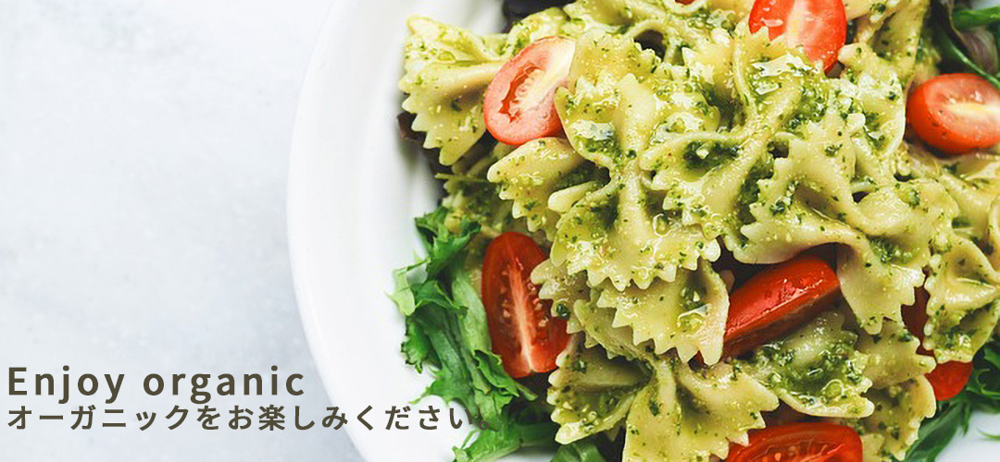

私たちのヘルシーフードは、厳選されたオーガニック食材を使用し、
栄養バランスを考慮して調理されています。
添加物や保存料を一切使用していません。

当店のコーヒー、フードは、全てオーガニックの物を使用しています。
お子様でも安心してお召し上がりください。
私たちのブログでは、オーガニック食品や健康に関する情報、
コーヒーの豆知識などを定期的に更新しています。ぜひチェックしてみてください。
NATURAL KITCHEN は、
心と体にやさしいオーガニックフードとドリンクを提供するカフェです。

私たちのチームに参加しませんか？NATURAL KITCHENでは、
オーガニック食品や健康に関心のあるスタッフを募集しています。
経験者はもちろん、未経験者も大歓迎です。